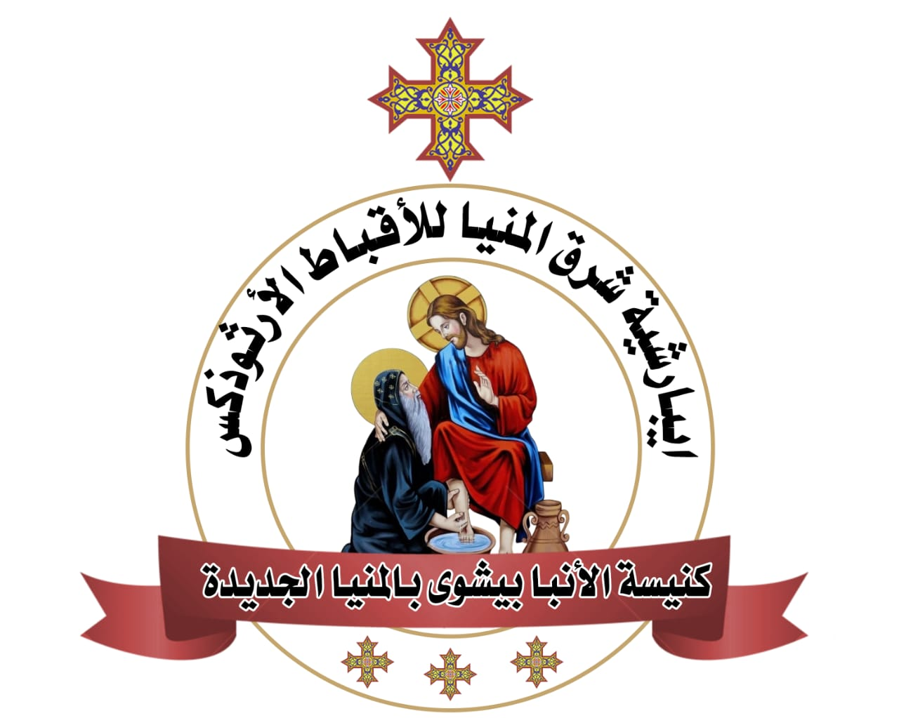

دليل الخدام لمتابعة الافتقاد
إيبارشية شرق المنيا للأقباط الأرثوذكس
ثُمَّ قَالَ بُولُسُ لِبَرْنَابَا: لِنَرْجِعْ وَنَفْتَقِدْ إِخْوَتَنَا فِي كُلِّ مَدِينَةٍ نَادَيْنَا فِيهَا بِكَلِمَةِ الرَّبِّ كَيْفَ هُمْ.
أَعْمَالُ الرُّسُلِ ١٥ : ٣٦